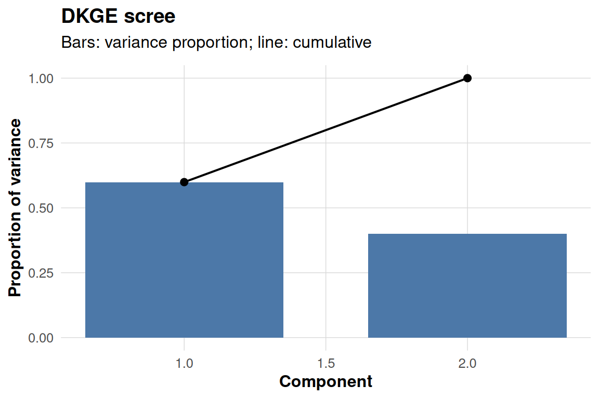
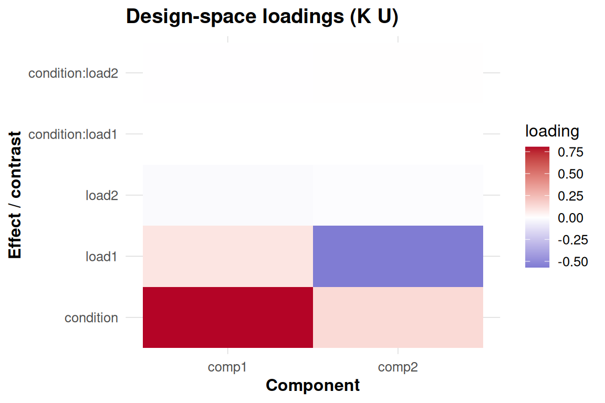

DKGE Workflow: From Subject Betas to a Shared Map
Source:vignettes/dkge-workflow.Rmd
dkge-workflow.RmdSuppose each subject has a GLM beta matrix in a common effect space but a different spatial parcellation. Your practical goal is to learn a shared effect-space representation, evaluate a planned contrast on held-out subjects, and place those subject-specific contrast fields on one reference parcellation.
This page follows that one path. It uses synthetic data so the code
is self-contained; replace the beta matrices, design matrices, and
centroids with your own. If q by P_s and “design kernel”
are not yet familiar, begin with vignette("dkge").
What are the inputs?
We use a 2 by 3 factorial design with a planted condition and load signal. Six subjects have different numbers of clusters, which is the reason transport is needed later.
toy <- dkge_sim_toy(
factors = list(condition = list(L = 2), load = list(L = 3)),
active_terms = c("condition", "load"),
S = 6, P = c(16, 18, 15, 17, 16, 19), snr = 4, seed = 2024
)
vapply(toy$B_list, dim, integer(2))
#> [,1] [,2] [,3] [,4] [,5] [,6]
#> [1,] 5 5 5 5 5 5
#> [2,] 16 18 15 17 16 19The output confirms a common number of effect rows and
subject-specific cluster counts. In real data, beta-row names must match
design-column names. dkge_data() validates that contract
and preserves subject IDs.
data_bundle <- dkge_data(
toy$B_list, designs = toy$X_list, subject_ids = toy$subject_ids
)
c(subjects = length(data_bundle$subject_ids), effects = data_bundle$q)
#> subjects effects
#> 6 5Next operation: fit a low-rank group basis. If your
subjects lack effects or have very unequal cell precision, stop here and
read vignette("dkge-partial-effect-spaces") first.
What is the baseline fit?
Start with an identity kernel. It retains the GLM/design scaling but adds no kernel-imposed similarity between effects.
K_identity <- diag(data_bundle$q)
fit_identity <- dkge(data_bundle, K = K_identity, rank = 2, w_method = "none")
dkge_plot_scree(fit_identity)
This fit returns a two-column group basis
fit_identity$U. The scree plot describes variation
represented by those components; it does not establish their reliability
or scientific importance.
Output: an unconstrained effect-space baseline.
Next operation: fit the scientifically motivated kernel and compare it with this baseline.
What changes when the design kernel is used?
The simulator supplies the structured kernel used to plant the
signal. A real analysis would construct this object explicitly with
design_kernel() and prespecify the included terms. Both
fits disable subject block weighting so the comparison isolates the
kernel change.
fit_structured <- dkge(data_bundle, K = toy$K, rank = 2, w_method = "none")
comparison <- data.frame(
component = 1:2,
identity = dkge_variance_explained(fit_identity)$prop_var,
structured = dkge_variance_explained(fit_structured)$prop_var
)
round(comparison, 3)
#> component identity structured
#> 1 1 0.599 0.58
#> 2 2 0.401 0.42Compare the retained subspaces as well as the scree values. Because
the bases use a kernel metric, a raw crossprod() is not a
valid rotation comparison.
angles <- dkge_principal_angles_K(
fit_identity$U, fit_structured$U, fit_structured$K
)
round(angles * 180 / pi, 1)
#> [1] 0 0Here component 1 accounts for 59.9% of the retained variation under the identity kernel and 58% under the structured kernel. Both principal angles round to 0 and 0 degrees: the kernel changes how variation is allocated within this seeded two-dimensional subspace, but not the subspace itself at displayed precision. This is a sensitivity comparison, not a test of which kernel is true.
Output: a structured fit plus an explicit record of how it differs from the identity baseline.
Next operation: inspect effect saliences, then specify the contrast you actually want to estimate.
Which effect directions define the components?
dkge_plot_effect_loadings(fit_structured, comps = 1:2)
The heatmap displays : effect-space saliences, not voxel coefficients. Look for coherent relative patterns within a component. Do not compare a component’s arbitrary sign across independent fits without alignment.
How do you obtain held-out contrast fields?
Build the contrast in fitted effect order. Here the simulator identifies the coordinate for the planted condition term.
condition_contrast <- numeric(data_bundle$q)
condition_contrast[toy$active_cols$condition] <- 1
condition_loso <- dkge_contrast(
fit_structured,
list(condition = condition_contrast),
method = "loso"
)
condition_loso
#> DKGE Contrasts
#> --------------
#> Method: loso
#> Contrasts: 1
#> Subjects: 6
#> Contrast names: conditionThe output is a named list of six subject-specific cluster vectors. LOSO cross-fitting keeps each subject out of the basis used to score that subject. It does not make a randomized causal contrast out of an observational design, nor does it supply group uncertainty by itself.
Output: one cross-fitted contrast field per subject, still indexed by that subject’s clusters.
Next operation: transport those fields before stacking or performing feature-level group inference.
How do subject fields reach one parcellation?
Transport needs real spatial features, normally cluster centroids in a common coordinate system. The synthetic coordinates below exist only to demonstrate the interface; their resulting map has no anatomical interpretation.
centroids <- lapply(seq_along(toy$B_list), function(s) {
p <- ncol(toy$B_list[[s]])
cbind(x = seq_len(p), y = rep(s / 100, p), z = rep(0, p))
})Use the ridge mapper for a dependency-light example and select subject 1 as the reference parcellation:
transported <- dkge_transport_contrasts_to_medoid(
fit_structured,
condition_loso,
medoid = 1,
centroids = centroids,
method = "ridge"
)
dim(transported$condition$subj_values)
#> [1] 6 16The returned matrix has subjects in rows and reference clusters in
columns; transported$condition$value is its across-subject
median on the medoid parcellation. The attached
attr(transported, "cache") can be reused for other
contrasts or resampling.
Transport quality depends on the features, masses, mapper, and reference choice. Inspect mapper diagnostics and repeat defensible sensitivity analyses; a successful matrix multiplication is not evidence that parcels are biologically homologous.
What should you save and report?
For a reproducible analysis, retain:
- effect names and the design matrices used to produce each beta matrix;
- the identity and structured kernels, their construction parameters, and the chosen rank;
- the identity-versus-structured comparison;
- cross-fitting folds or LOSO specification;
- cluster coordinates, masses, mapper settings, medoid choice, and transport diagnostics; and
- the inference unit and multiplicity procedure for every reported claim.
Continue with vignette("dkge-concepts") for the fitted
moment and inference levels,
vignette("dkge-contrasts-inference") for uncertainty, and
vignette("dkge-weighting") for the distinct roles of
spatial, effect, subject, and transport weights.